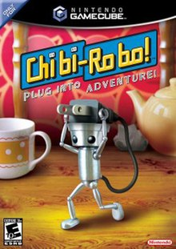

Home
Ideally this page would be customized for for every item in a made database
This is a example page for the first search result

Chibi Robo
GameCube
The player takes on the role of the eponymous character, Chibi-Robo, a 10-centimeter-tall robot that has a power plug for a tail. Gameplay revolves around navigating a household and collecting "Happy Points". These points are accumulated by completing various tasks from housework to helping solve the dilemmas of the Sanderson family and the numerous living toys that inhabit their household. Every action by the game's battery-powered protagonist consumes energy, requiring the player to recharge using the home's electrical outlets.
Loose Price
$115.28
Complete Price
$177.50
New Price
$266.00